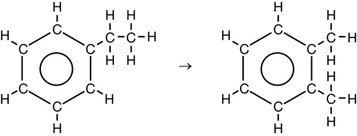

Module 5—Hydrocarbons and the Petroleum Industry
 Self-Check Answers
Self-Check Answers
Contact your teacher if your answers vary significantly from the answers provided here.
Section 9.4 1.
Benzene, C6H6, is the simplest aromatic compound. Its carbon-carbon bond lengths are all the same, but they are neither single nor double bonds. Each pair of carbons shares one electron pair, and the six remaining valence electrons are shared around the ring.
Section 9.4 2.
Section 9.4 3.

Section 9.4 4.

Section 9.4 5.
- 1-ethyl-3-methylbenzene
- 1-methyl-4-propylbenzene
- 3-methyl-2-phenylpentane
- 3-methyl-4-phenylhexane
- 2-phenylhept-3-ene
- 4-phenylpent-1-yne
You may not have recognized C6H5 as being a phenyl group in part c. and you might have incorrectly named the aromatic hydrocarbon in part d. as 2-ethyl-3-phenylpentane.
Section 9.4 6.
-
-

Section 9.4 7.
- aliphatic
- aromatic
- aliphatic
- aliphatic
- aromatic
- aromatic
Section 9.4 8.
- unsaturated
- saturated
- unsaturated
- unsaturated
- unsaturated
- unsaturated
Section 9.4 9.
As pointed out in “Section 9.4” question 1, benzene does not have any double bonds as such. The name 1,3,5-cyclohexatriene would be misleading and incorrect.
Section 9.4 10.
A major factor in determining the strength of London forces is the number of electrons in a molecule. The greater the number of electrons, the stronger the London forces and the higher the boiling point. Using only this criterion, the following order of increasing boiling points would be predicted:
benzene (42 e-) < cyclohexene (46 e-) < cyclohexane (48 e-) < hex-1-ene (48 e-) < hexane (50 e-)
The actual order is as follows:
hex-1-ene (63.5°C) < hexane (68.7°C) < benzene (80.10°C) < cyclohexane (80.5°C) < cyclohexene (83.0°C)
Since the predicted order is not consistent with the evidence, it is not valid to consider only the number of electrons when predicting boiling points. Here, molecular shape is important because it affects how closely the molecules can get to one another.